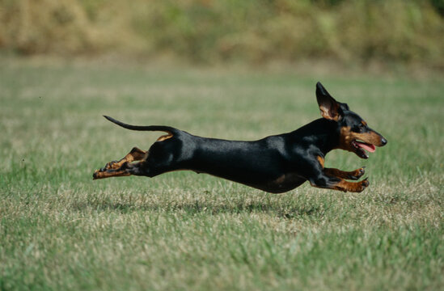
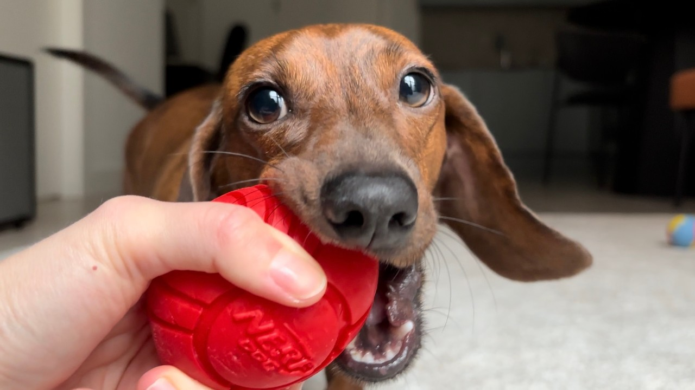

Exercise
Dachshunds need regular exercise to stay healthy, maintain a good weight, and avoid boredom. However, their exercise needs are different from many other dogs because of their long backs and short legs.

Daily Exercise
Dachshunds benefit from daily walks and light activity. Around 30–45 minutes per day is usually enough for most dogs.
This can be split into two shorter walks, along with playtime at home.
Safe vs Unsafe Exercise
Safe activities:
- Walking on a leash
- Playing on flat ground
- Light games like fetch (short distance)
- Sniffing and exploring
- Digging in sand or dirt (make sure to clean up after!)
Activities to avoid:
- Jumping on and off furniture
- Running up and down stairs repeatedly
- High jumps or obstacle courses
- Rough play that twists their body
Mental Stimulation
Exercise isn’t just physical. Dachshunds are smart dogs and need mental stimulation to stay happy.
Puzzle toys, treat games, and even basic training sessions can help keep their minds active and prevent boredom.
